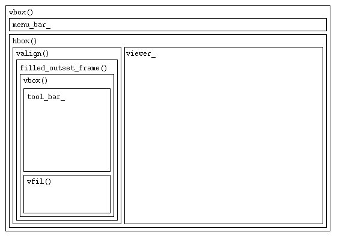

FDRAW
int main(int argc, char** argv) {
// init Fresco and CORBA
FrescoContext* fc = FrescoLib::init_default_context(
"FDraw", argc, argv, options
);
// ...
// create FDraw object and start application
Viewer_var fdraw = new FDraw;
Display_var display = fc->display_ptr();
Screen_var screen = display->default_screen();
Window_var window = screen->application(fdraw);
Viewer_var(window->main_viewer())->request_focus(fdraw, false);
window->map();
display->run(true);
return 0;
}
FDraw
class FDraw : public Editor {
{
FDraw::FDraw(XfGlyph::Requisition* req)
{
// get pointers some of the factories (KitFactory stores'em
// in static variables. A man sane in mind should do the same
// thing directly, saves a hundered lines of code like these!)
FigureKit* figures = KitFactory::instance()->figures();
LayoutKit* layouts = KitFactory::instance()->layouts();
WidgetKit* widgets = KitFactory::instance()->widgets();
MenuKit* menus = KitFactory::instance()->menus();
running_ = false;
// create the base objects for the menubar
// (more mind splicing code...)
run_menu_root_ = menus->submenu_item();
run_menu_bar_ = menus->menu_bar(run_menu_root_);
run_menu_manager_ = menus->menu_manager(run_menu_root_);
run_menu_manager_->root_menu(run_menu_bar_);
// set the viewer (what???) i'll find out soon
FigViewer_var fv = new FDrawViewer(this, &running_);
set_viewer(fv);
// without a call to 'body' the whole application ends up in
// a segmentation fault! And: the call to 'interior()' does the
// main initialisation of this window
body(Glyph_var(layouts->back(
Glyph_var(interior()),
Glyph_var(widgets->filler())
)));
// provide factories for the Externalization service
static Boolean bound = false;
if (bound == false) {
streaming_bind(FDrawManip);
streaming_bind(Separator);
streaming_bind(SeparatorManip);
bound = true;
}
}
Glyph_ptr interior()
{
// another attempt to waste time...
LayoutKit* layouts = KitFactory::instance()->layouts();
WidgetKit* widgets = KitFactory::instance()->widgets();
MenuKit* menus = KitFactory::instance()->menus();
// a 'deck' displays only one of its children at a time
deck_ = layouts->deck();
// now we create 2 children and put'em into the deck
/* bottom layer: run mode */
{
// modify the menubar
MenuItem_var menu = menu_item_string("File", 'F');
menu->append(
MenuItem_var(button_item_string(
"Edit", 'E', new RunEditAction(this, false)
))
);
run_menu_root_->append(menu);
run_menu_root_->append(MenuItem_var(menus->separator_item()));
run_menu_bar_->need_resize(); // a hack to get run_menu_bar to update
// now we put the menubar and the viewer into the first child
Glyph_ptr run = layouts->vbox();
run->append(
Glyph_var(layouts->halign(run_menu_bar_, Coord(0.5)))
);
run->append(viewer_);
card_[1] = run;
}
/* top layer: edit mode */
{
// no, there seems to be no reason why we call these methods right here:
commands(); // create the menubar
tools(); // create the toolbar
// create glyph for the edit mode

Glyph_var toolbox = layouts->vbox();
toolbox->append(tool_bar_);
Glyph_var glue = layouts->vfil();
toolbox->append(glue);
Glyph_var hbox = layouts->hbox();
hbox->append(
Glyph_var(layouts->valign(
Glyph_var(widgets->filled_outset_frame(toolbox)), Coord(0.5)
))
);
hbox->append(viewer_);
Glyph_ptr edit = layouts->vbox();
edit->append(menu_bar_);
edit->append(hbox);
card_[0] = edit;
}
deck_->append(card_[0]);
cur_card_ = 0;
return widgets->inset_frame(deck_);
}
void tools()
{
// another attempt to waste time...
LayoutKit_ptr layouts = KitFactory::instance()->layouts();
MenuKit_ptr menus = KitFactory::instance()->menus();
WidgetKit_ptr widgets = KitFactory::instance()->widgets();
FigureKit_ptr figures = KitFactory::instance()->figures();
FigureStyle_var fs = figures->default_style();
// ...
// create an object for line manipulation
Manipulator_var line_manip = new LineManip(
FigLine_var(figures->line(fs, Coord(0), Coord(0), Coord(0), Coord(0)))
);
// ...
Tool_var line_tool = new CreateTool(line_manip);
// ...
// these variables are defined and initialized in the Editor class:
// RootTelltale *tool_root_tt_ = new RootTelltale;
// MenuItem* tool_root_ = menus->submenu_item();
// ToolBar* tool_bar_ = menus->tool_bar(tool_root_);
// tool_manager_ = menus->menu_manager(tool_root_);
// tool_manager_->root_menu(tool_bar_);
MenuItem_var line_menu = tool_item(
"Line",
Glyph_var(figures->line(fs, Coord(0), Coord(0), Coord(15), Coord(15))),
viewer_, line_tool, tool_root_tt_
);
// ...
tool_root_->append(line_menu);
// ...
tool_root_->default_item(select_menu);
tool_root_tt_->default_item(select_menu);
tool_bar_->need_resize(); // a hack to get the tool_bar to update
}
};
FDrawViewer
class FDrawViewer : ixx_extends(FigViewer)
{
FDrawViewer(Editor *ed, Boolean* running)
:FigViewer(ed)
{
// the manual says: "a group can contain one or more figures"
Glyph_var group = KitFactory::instance()->figures()->group();
Manipulator_var manip = new PolyManip;
manip->body(group);
narrowgt_ = nil;
offsets_ = nil;
glyphs_ = nil;
running_ = running;
body(manip);
append_viewer(manip);
}
}